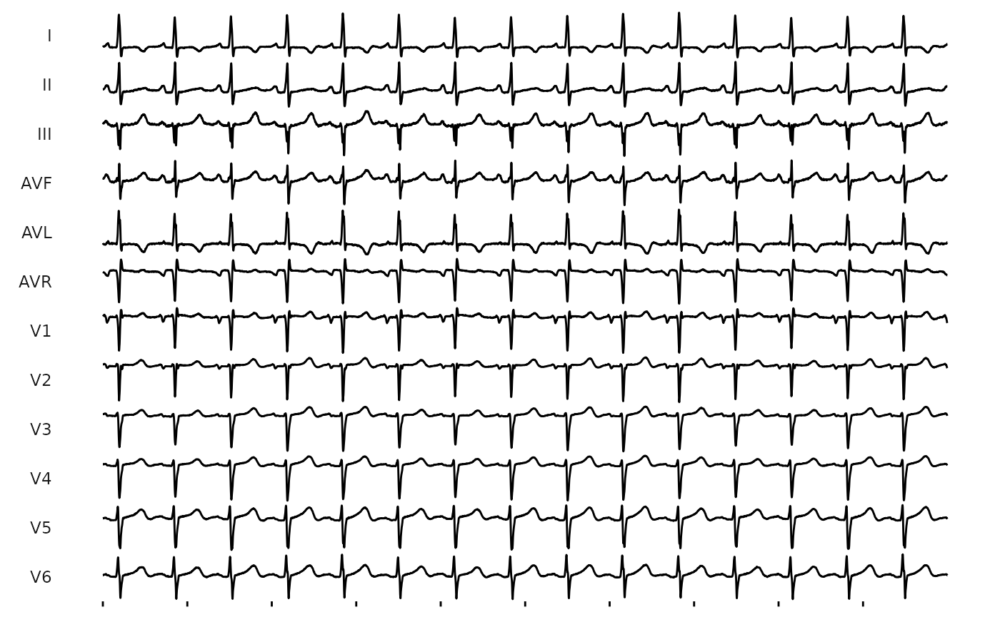
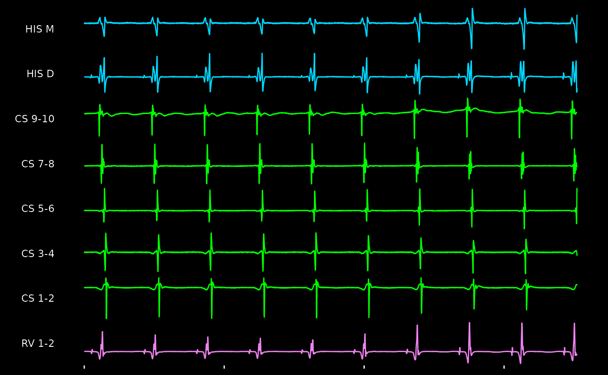

library(EGM)
#>
#> Attaching package: 'EGM'
#> The following object is masked from 'package:stats':
#>
#> windowReading in Data
Thie software supports reading in certain types of raw cardiac
electric signal currently. This includes both intracardiac and
extracardiac data. Please see read_muse() and
read_bard() as examples. If additional formats are
requested, please file an issue and
provide a sample file (which primarily requires signal, in whatever
format, and meta-information about the individual channels).
Here is a simple example of taking a MUSE XML file and converting it to digital signal. This was tested against the 9th version of the MUSE XML format.
# Read in data
fp <- system.file('extdata', 'muse-sinus.xml', package = 'EGM')
xml <- readLines(fp)
head(xml)
#> [1] "<?xml version=\"1.0\" encoding=\"ISO-8859-1\"?>"
#> [2] "<!DOCTYPE RestingECG SYSTEM \"restecg.dtd\">"
#> [3] "<RestingECG>"
#> [4] " <MuseInfo>"
#> [5] " <MuseVersion>9.0.10.18530</MuseVersion>"
#> [6] " </MuseInfo>"
# Instead, can read this in as a MUSE XML file
# Now as an `egm` class
ecg <- read_muse(fp)
ecg
#> <Electrogram>
#> -------------------
#> Recording Duration: 10 seconds
#> Recording frequency 500 hz
#> Number of channels: 12
#> Channel Names: I II III AVF AVL AVR V1 V2 V3 V4 V5 V6
#> Annotation:
#> Type: Standard 12-lead ECG
# Can now plot this easily
ggm(ecg) +
theme_egm_light()
#> Scale for colour is already present.
#> Adding another scale for colour, which will replace the existing scale.
#> Scale for colour is already present.
#> Adding another scale for colour, which will replace the existing scale.
Similarly, intracardiac recordings obtained through bard can be read in as well. The function itself documents how this generally work.
# Read in data
fp <- system.file('extdata', 'bard-avnrt.txt', package = 'EGM')
bard <- readLines(fp)
head(bard, n = 20)
#> [1] "[Header]" "File Type: 1"
#> [3] "Version: 2" "Channels exported: 11"
#> [5] "Samples per channel: 3522" "Start time: 15:17:57"
#> [7] "End time: 15:18:01" "Ch. Info. Pointer: 320"
#> [9] "Stamp Data: C" "Mux format: 0"
#> [11] "Mux Block Size: " "Data Format 1"
#> [13] "Sample Rate: 1000Hz" "Channel #: 1"
#> [15] "Label: I" "Range: 5mv "
#> [17] "Low: .5Hz" "High: 100Hz"
#> [19] "Sample rate: 1000Hz" "Color: FFFFFF"
# Instead, read this as signal, breaking apart header and signal data
# Presented as an `egm` class object
egram <- read_bard(fp)
egram
#> <Electrogram>
#> -------------------
#> Recording Duration: 3.522 seconds
#> Recording frequency 1000 hz
#> Number of channels: 11
#> Channel Names: I III V1 CS 1-2 CS 3-4 CS 5-6 CS 7-8 CS 9-10 HIS D HIS M RV 1-2
#> Annotation:
# Similarly, can be visualized with ease
ggm(egram, channels = c('HIS', 'CS', 'RV'), mode = NULL) +
theme_egm_dark()
#> Scale for colour is already present.
#> Adding another scale for colour, which will replace the existing scale.
Class Introduction
The EGM package introduces a specific data-oriented
class called egm (note the lower-case spelling
compared to the package name). This class is the primary data structure,
and allows for compatibility within multiple signal types, including
when reading in WFDB-formatted data. Once in this class, everything can
be written out as well - with the preferred option being for the stated
WFDB format.